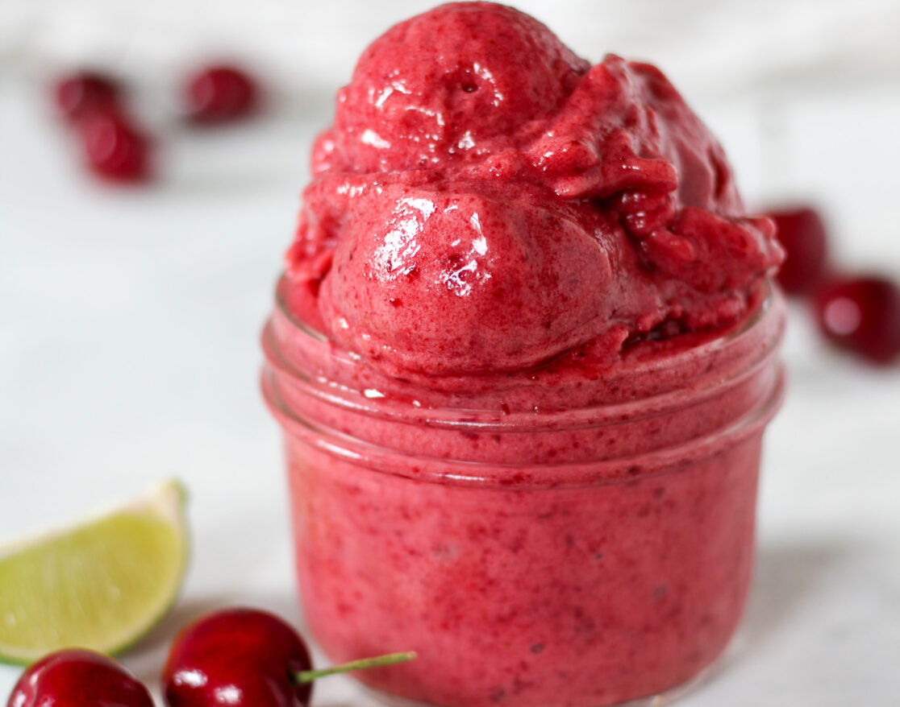

Black Bean & Corn Salsa
By Chef Megan McCarthy

Cook once, eat three different ways! This
black bean & corn salsa can be transformed
into both a hummus or a stovetop soup
Ingredient List
1 can black beans (15 ounces), rinsed and drained
1 cup of corn, fresh or frozen
1 orange, yellow or red bell pepper, seeded and diced
1 medium fresh tomato, seeded and diced
1 cup of shredded or diced radish
1 jalapeño, seeded and finely chopped
Sea salt and fresh cracked pepper to taste
¼ cup chopped fresh cilantro
Instructions
In large bowl, add ingredients to combine.
Spoon mixture onto lettuce cups or serve with tortilla chips.
Garnish with additional cilantro leaves to serve.
Strawberry Santas

Strawberry Santas
By Emily Holdorf
Create these 2-ingredient strawberry
Santas for a festive snack!
Ingredient List
Strawberries, washed & pat dry
Whipped cream or whipped topping
Instructions
Cut the stem off of the strawberry to create
a flat surface for the strawberry to stand up.
Slice the strawberry in half to create the
bottom “body” part and top “hat” part of the Santa.
Place a dollop of whipped cream on the bottom
part of the strawberry and top with the top “hat.”
Cherry Lime Sorbet

By Emily Holdorf
Craving a refreshing treat without the
fuss? This sorbet recipe is so simple,
you'll only need two ingredients. No ice
cream maker needed! Just cherries and
limes come together in a burst of flavor
that's perfect for summer.
Ingredient List
Instructions
Remove the stems and pits of cherries.
Place cherries on a parchment lined
baking sheet. Spread evenly. Place
in freezer for 2-3 hours. Once cherries
are frozen transfer into an airtight
freezer bag or container and leave in
freezer overnight.
When ready to enjoy sorbet, take the
frozen cherries and place in a food
processor. Juice the 2 limes on top of
the cherries. Pulse to blend cherries
into desired sorbet consistency. You
may need to scrape down the sides
occasionally to ensure even blending.
Serve immediately for a soft-serve-like
consistency. If you prefer a harder
sorbet, place in an airtight container
and put in the freezer until desired
consistency is reached.
Recipe Notes:
No cherry pitter? No problem! Use a
metal straw to make quick work of those pits.
Keep extra frozen cherries on hand for
instant sorbet anytime.